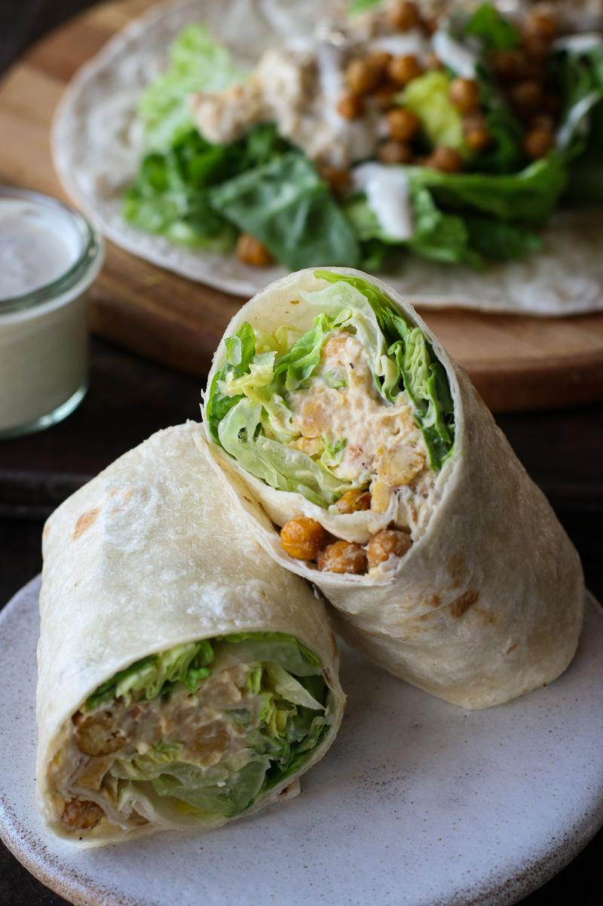

Chickpea Caesar Salad Wrap
Recipe by Pick Up Limes. If you
like, please visit and
support them, thank you.

Description
AThis quick yogurt-based Caesar dressing is the star in this fast recipe. Quickly roasted chickpeas add a
lovely texture to this delicious wrap.
If you’re looking for the Vegan Caesar Wrap, read on! This has become one of my go to lunches— quick, nourishing
and DELISH! And each time I share it on my stories, I get so many DMs, I decided it was time to finally add it
to the website.
Ingredients
Chickpea croutons
- 1 cup (164 g) cooked chickpeas
- 2 tsp (10 mL) olive oil
- ¼ tsp salt
Yogurt Caesar dressing
- ½ cup (120 mL) unsweetened soy yogurt
- 2 Tbsp (30 mL) vegan mayonnaise
- 2 Tbsp (4 g) nutritional yeast flakes
- ½ lemon, juiced and zested
- 1 tsp (3 g) capers, finely minced
- ½ tsp garlic powder
- ¼ salt
- ¼ tsp ground black pepper
The wrap
- 1 cup (164 g) cooked chickpeas
- 2 large (25 cm) tortilla wraps
- 1½ cups (52 g) romaine lettuce, chopped
Steps
- To make the chickpea croutons, cook the chickpeas, oil, and salt in a medium pan* over high heat, stirring
often for 14 minutes, until golden. Then remove from the heat. The chickpeas will continue to crispen
slightly as they cool.
- Meanwhile, in a small bowl, make the dressing by mixing the yogurt, mayo, nutritional yeast, lemon juice and
zest, capers, garlic powder, salt, and pepper.
- To another bowl, mash the remaining chickpeas with half of the dressing.
- To assemble the wrap, place the tortilla wraps on a flat surface. Divide the lettuce, mashed chickpeas, and
chickpea croutons between the wraps. If desired, toss the lettuce with the remaining dressing before
assembling.
- Fold in the sides of the wrap, then fold the wrap upwards and over to seal in the fillings.
- Serve with any remaining dressing. Enjoy!
Notes
- Alternatively, in a microwave-safe bowl, add the chickpeas, olive oil, and salt. Mix to coat. Microwave for
7 minutes on medium-high power (600 W). Stir and microwave again for another 7 minutes. The chickpeas should
be golden and lightly crispy. Use oven mitts when removing the chickpeas from the microwave.
Storage
- The assembled wrap should be enjoyed the day it's made.
- Unassembled components of the wrap can be stored in airtight containers in the fridge for up to 2 days. Note
that the chickpeas will lose their crispiness when refrigerated.
Back to the recipe index